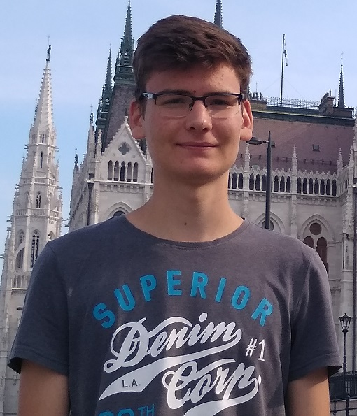

Bemutatkozás
Labancz Balázs vagyok, a Budapesti Műszaki és Gazdaságtudományi Egyetem Gépészmérnöki Karának elsőéves hallgatója. Kecskeméten születtem, jelenleg Lakiteleken élek. Gimnáziumi tanulmányaimat a Kecskeméti Református Gimnáziumban végeztem.
Gyermekkorom óta szeretek különböző gépeket, szerkezeteket tervezni, így nem is kérdés, hogy a jövőben is ezzel szeretnék foglalkozni. Lévén még csak elsőéves hallgató vagyok, az egyetemen még nincs túl sok projektem, de azért nem marad üresen az az oldal sem, hiszen itthon is több saját projekten dolgozom.
Szabadidőmben általában a kedvenc sportomat a tájékozódási futást űzöm, de bármilyen természetben töltött tevékenységet szívesen csinálok.